par Éric Fullenbaum
Envoyez vos commentaires et questions sur cet article à alt.jm-6ouqc7bk@yopmail.com
I - Pourquoi faut-il évacuer ? 1
II - Présentation du mode d’emploi 2
Annexe 1 - Le mode d’emploi en détail pour évacuer (cas des utilisateurs Windows, Android) 4
1) Évacuer les navigateurs Chrome et Edge pour Firefox 4
2) Évacuer les moteurs de recherche américains (Google search, Bing) 4
3) Évacuer la messagerie instantanée WhatsApp 5
4) Évacuer la cartographie Google Map ou Waze 5
5) Évacuer les chat IA américains 5
6) Évacuer les visios Teams, Zoom, Google Meet, Webex 5
7) Évacuer Microsoft 365 OneDrive pour Cloudeezy 5
7.1 Créer un compte Cloudeezy 6
7.2 Voir ses fichiers Cloudeezy sur son PC 6
7.3 Transférer ses contacts de Microsoft 365 vers Cloudeezy 7
7.4 Transférer une portion de son calendrier de Microsoft 365 vers Cloudeezy 10
8) Voir ses mails, contacts et calendriers sur son PC avec Thunderbird 13
9) Accéder à ses fichiers, contacts et calendriers sur son téléphone 15
10) Évacuer la bureautique Office (Word, Excel, Powerpoint) 21
11) Évacuer les boîtes aux lettres hébergées Outlook et gmail 22
Le Cloud Act et plus particulièrement le Foreign Intelligence Surveillance Act FISA paragraphe 702 article 1881a permettent une surveillance de masse des Européens et plus largement de tous les non-Américains qui utilisent les plateformes numériques américaines. De plus, l’utilisation massive des plateformes numériques américaines rend l’Europe très dépendante. Que faire si ces services doublent de prix ou sont arrêtés dans un pays sur décision américaine ? Cela serait particulièrement inquiétant si une dictature prenait le pouvoir aux États-Unis. Enfin, l’utilisation de ces services profite à l’économie américaine plutôt qu’à l’économie européenne, alors que nous disposons d’alternatives européennes.
Il est donc dans l’intérêt des Européens d’évacuer les services numériques américains d’abord pour bénéficier de la protection juridique européenne, ensuite, pour aider l’Europe à retrouver une souveraineté numérique, enfin pour favoriser l’économie européenne.
Les entreprises et administrations européennes ont certes entamé des actions, mais les particuliers restent démunis.
On trouve sur le web de plus en plus de sites qui recensent les solutions européennes alternatives (voir annexes) mais personne n’explique aux particuliers comment s‘y prendre de A à Z pour évacuer les solutions américaines.
C’est donc pour combler ce manque que vous trouverez ici un mode d’emploi très simple pour évacuer les plateformes numériques américaines lorsqu’on utilise une liste de solutions américaines grand public sur les systèmes d’exploitation Windows (PC) et Android (téléphone).
Nota bene : nous ne présentons pas ici le mode d’emploi pour évacuer les systèmes d’exploitation Windows et Android et nous supposons qu’ils sont conservés. L’évacuation des systèmes est à faire selon nous dans un second temps et après avoir évacué les solutions applicatives. De nombreux blogs et magazines décrivent la migration d’un PC de Windows à Linux. Voir par exemple le dossier « La migration LINUX simplifiée » du magazine Inside Linux de septembre 2026 n°71.
Pour pouvoir évacuer les plateformes numériques américaines, il faut avoir choisi des plateformes souveraines alternatives. Pour choisir ces plateformes alternatives, nous avons examiné dans l’ordre :
les alternatives françaises,
les alternatives européennes,
les alternatives non européennes et non américaines lorsque par exemple l’ergonomie le justifie,
les solutions open source.
Notons qu’il ne suffit pas que la solution logicielle soit européenne, il faut également qu’elle soit hébergée sur des datacenters opérés en Europe.
Après différents tests, nous avons choisi certaines plateformes qui nous semblent les meilleures même si d’autres combinaisons sont possibles.
Le tableau ci-dessous récapitule les alternatives sélectionnées pour lesquelles on donne ensuite le mode d’emploi :
| Plateforme américaine ou logiciel à évacuer | Alternative sélectionnée |
|---|---|
| Navigateur Chrome, Edge | Firefox (Open
source) |
| Moteur de recherche Google Search et Microsoft Bing | Startpage
(Pays-Bas) Qwant (France) |
| Messagerie WhatsApp | Telegram (Dubai) https://telegram.org/ |
| Google Maps, Waze | Here We Go (Pays-Bas) ou Mapy (République Tchèque) https://mapy.com/fr |
| Chat IA (GPT, Claude, LlaMA, Grok, etc.) | Utiliser Mistral Vibe (France) ou Vanish Startpage Private AI (Pays-Bas) cinq questions gratuites par jour ou 49,99 €/an sur téléphone https://vanish.startpage.com/fr |
| Microsoft Teams, Zoom, Google Meet, Cisco Webex | kMeet (Suisse) https://kmeet.infomaniak.com/ (France) |
| Microsoft 365 Personnel à 99 €/an | Il s’agit ici d’évacuer l’archivage des fichiers dans OneDrive et le stockage des contacts et des calendriers : Cloud Premium Cloudeezy 48 €/an 1000 GB (France) https://cloudeezy.com/hebergement-nextcloud/gratuit.html Application Nextcloud sur Windows (Allemagne) |
| Outlook et accès OneDrive ou Gmail et accès Google Drive | PC : il s’agit ici d’avoir accès à ses fichiers, mails, contacts et calendriers sans utiliser OneDrive et Outlook : Client mail Thunderbird Windows Gratuit. Don de 15 € optionnel (Open Source) Android : il s’agit ici d’avoir sur son téléphone un accès partagé avec son PC à ses fichiers, mails, contacts et calendriers sans utiliser OneDrive et Outlook : Application Nextcloud sur Android (Allemagne) Client mail Thunderbird Android Gratuit. Don de 15 € optionnel (Open Source) Applications Nextcloud Calendar et DavX5 (5,99 €) |
| Microsoft Word, Excel et PowerPoint | OnlyOffice version online incluse dans Cloudeezy et version Desktop https://www.onlyoffice.com/download-desktop#desktop (Royaume-Unis / Lettonie) en attendant Euro-Office https://euro-office.github.io/documentation/installation/docker/ |
| Boîtes aux lettres hébergées live, outlook, gmail | Choisir un hébergeur de boîtes mail européen Free, Orange, Bouygues Telecom, etc. ou voir les offres européennes ici : https://eutechstack.eu/fr/hebergement-email ou là https://european-alternatives.eu/category/email-providers |
Nota bene : l’étape 7 du mode d’emploi présenté en annexe 1 (« Évacuer Microsoft 365 » ) est la plus délicate mais elle constitue l’action majeure de l’évacuation.
Si vous entamez l’évacuation des principaux services numériques américains en suivant le mode d’emploi décrit dans cet article, vous aurez déjà fait un très grand pas pour l’Europe. Il ne vous restera alors à profiter de la technologie européenne, à participer à la soumission des demandes d’amélioration et à faire la promotion de ce mode d’emploi !
Et qui sait, vous êtes peut-être prêt pour basculer sur un smartphone Fairphone réparable, équitable et équipé d‘un système d’exploitation Open Source Murena (e/OS) entièrement « dégoogelisé » et conçu en Europe !
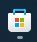
Sur votre PC, ouvrir le Windows Store, puis rechercher l’application Mozilla Firefox et l’installez.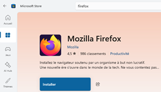
Sur Android, ouvrir le Play Store, rechercher Firefox : navigateur privé.
Après vous être familiarisé avec votre nouveau navigateur, vous pouvez désinstaller les navigateurs inutilisés (Chrome, Edge, etc.).
Nota bene : voir en annexe le mode d’emploi pour une installation personnalisée permettant entre-autre de choisir la partition d’installation.
Sur Windows, vous pouvez régler la page d’accueil de votre navigateur sur :
soit Startpage (https://www.startpage.com/fr/),
soit Qwant (https://www.qwant.com/?l=fr).
Sur Android, vous pouvez faire de même, voir installer l’application Startpage disponible dans le Google Play.
DuckDuckGo (https://duckduckgo.com/, Californie) offre une bonne ergonomie en particulier avec ses « bang tags » (https://duckduckgo.com/bangs) et garantit la confidentialité des recherches, mais est soumis au Cloud Act (https://duckduckgo.com/). Cependant, si DuckDuckGo respecte les termes de sa politique de confidentialité, il n‘y a pas trop de risque à l’utiliser : https://duckduckgo.com/privacy.
Telegram (Dubai), une excellente ergonomie équivalente à celle de WhatsApp.
Olvid (France) assure la plus grande confidentialité avec la meilleure protection de la vie privée, mais nécessite de s’échanger les clés avant de pouvoir communiquer (pas d’accès à la liste des contacts). De ce fait, elle n’est pas ergonomique pour la plupart des usages.
Nota bene 1 : pour que Telegram vous assure la même confidentialité qu’Olvid, voyez le commentaire en annexe.
Nota bene 2 : nous ne faisons pas figurer Signal dans la liste étant donné sa forte dépendance avec les États-Unis, avec le Cloud Act FISA 702 et avec les serveurs Amazon (AWS). https://fr.wikipedia.org/wiki/Signal_(application).
Utilisez l’une des solutions suivantes :
Here we go (Pays-Bas) https://wego.here.com/
Mapy (République Tchèque) https://mapy.com/fr/
Utilisez :
Mistral Vibe (France) https://chat.mistral.ai/chat
Vanish Startpage Private AI (Pays-Bas) https://play.google.com/store/apps/details?id=com.privateai&hl=fr
Duck ai (Californie, https://duck.ai/) offre une bonne ergonomie et garantit la confidentialité des échanges, mais est soumis au Cloud Act. Cependant, si Duck.ai respecte les termes de sa politique de confidentialité, il n‘y a pas trop de risque à l’utiliser : https://duckduckgo.com/duckai/privacy-terms.
Utilisez kMeet d’Infomaniak (Suisse) https://kmeet.infomaniak.com/?lang=fr.
Si vous êtes un agent de l’État ou un professionnel qui dispose d’un numéro de SIRET, vous pouvez également utiliser Visio de la suite numérique du gouvernement (France) https://lasuite.numerique.gouv.fr/produits/visio
Il s’agit d’évacuer le stockage de fichiers Microsoft OneDrive, le stockage du carnet d’adresses et le stockage du calendrier. Pour cela, on utilise la solution Cloudeezy française qui met en œuvre la technologie Nextcloud allemande.
Le partage entre le PC et le téléphone du carnet d’adresse et du calendrier et l’évacuation des boîtes aux lettres hébergées sur des plateformes américaines (boîtes ayant pour nom de domaine outlook.fr, live.fr, gmail.com, etc.) ainsi que l’évacuation de la bureautique Word, Excel et Powerpoint seront vues dans les chapitres suivants.
Sur le web, créez d’abord un compte gratuit Cloudeezy pour vous familiariser avec son fonctionnement (avant de passer au compte payant Cloud Premium 48€/an ultérieurement) :
https://cloudeezy.com/hebergement-nextcloud/gratuit.html
Utilisez un courriel qui n’est pas hébergé sur une plateforme américaine (pas de nom de domaine live.fr ou gmail.com, etc.) et un mot de passe suffisamment long. Une fois le compte créé, vous pouvez visualiser vos services Cloud en vous connectant sur https://my.cloudeezy.com/login
Pour synchroniser sur votre PC les fichiers de votre disque dur avec votre nouvel espace Cloudeezy, installez le client Nextcloud Files pour desktop (PC) à télécharger ici : https://nextcloud.com/install/#install-clients
Une fois l’application Nextcloud installée, lancez-là. L’écran suivant apparaît :
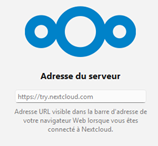
Saisissez l’adresse https://my.cloudeezy.com, puis cliquez sur [Suivant]. L’écran qui suit apparait :
Cliquez sur le bouton [Se connecter] et entrez l’adresse e-mail et le mot de passe que vous avez définis lors de la création du compte Cloudeezy.
Au bout de quelque secondes, l’écran suivant apparaît :
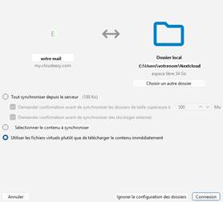
Cet écran indique que le dossier C:\Users\VotreNom\Nexcloud sera synchronisé sur les serveurs Cloudeezy. Si vous disposez d’une seconde partition (D:), vous pouvez choisir d’y localiser le dossier Nextcloud. Cliquez sur [Connexion].
Sur votre PC, vous pouvez donc commencer à transférer au fil de l’eau des dossiers de votre OneDrive vers votre NextCloud/Cloudeezy en copiant ou déplaçant des dossiers de OneDrive (C:\Users\VotreNom\OneDrive) vers NextCloud (C:\Users\VotreNom\Nexcloud).
Conseil : chiffrez les fichiers les plus précieux avant de les mettre sur le Cloud. Vous pouvez pour cela utiliser Cryptomator (Allemagne) et chiffrer les copies des documents pouvant permettre une usurpation d’identité (carte d’identité, passeport, diplômes, carte grise, fiches de salaire, RIB, clés de logiciels, etc.).
Vous devez maintenant exporter vos contacts Outlook stockés dans Microsoft 365. Avant de le faire, vous pouvez en profiter pour supprimer les contacts devenus inutiles ainsi que les doublons.
L’opération est fastidieuse, car Outllook ne supporte correctement que l’export de contacts au format csv et Cloudeezy a besoin d’un fichier au format vcf (vCard) pour l’import des contacts.
(Le site suivant donne des modes opératoires pour exporter des contacts Outlook au format csv, mais – selon nos tests – ces modes opératoires ne fonctionnent pas dès que l’on a plus de 50 contacts à sauvegarder. D’autre part, certains champs ne sont pas exportés : https://univik.com/blog/export-outlook-365-contacts-to-vcf/)
Il va donc falloir passer par une conversion du fichier contacts au format csv généré par Microsoft Outlook en fichier contacts vcf. Pour cela, il y a plusieurs possibilités :
Demander au support Cloudeezy de convertir votre csv en vcf et de l’importer. Vous devez donc faire confiance à Cloudeezy pour la confidentialité, mais, comme vous choisissez leur plateforme, ce devrait être le cas (https://cloudeezy.com/contact.html)
Convertir votre fichier csv avec un outil en ligne ou télécharger un outil gratuit de conversion, mais cela représente une prise de risque sur la confidentialité de votre carnet d’adresses.
Convertir vous-même votre liste de contacts au format csv grâce à un compte temporaire Google gmail (option la plus robuste si l’on a de nombreux contacts) ce qui suppose de réaliser les opérations suivantes :
exporter vos contacts Microsoft 365 au format csv,
importer ces contacts au format csv dans votre compte gmail temporaire,
exporter depuis gmail au format vcf,
importer ces contacts au format vcf dans Cloudeezy,
effacer les contacts préalablement importés dans le compte gmail.
Nous passerons par un compte Google gmail car, contrairement à Microsoft, Google sait très bien générer une liste de contacts au format vcf. Vous devez donc disposer d’un compte gmail que vous pouvez créer de manière temporaire - si vous n’en avez pas - ici : https://accounts.google.com/
Nota bene : après la conversion, n’oubliez pas de supprimer tous vos contacts du compte Google/gmail temporaire.
Depuis Windows, cliquez sur l’icône OneDrive en bas à droite dans la barre des tâches, puis cliquez sur « Afficher en ligne » :
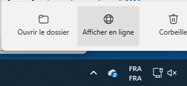
Vous vous retrouvez sur OneDrive en ligne. Cliquez sur le menu en haut à gauche (carré 9 points) :
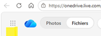
Cliquez sur l’icône Outlook pour démarrer Outlook en ligne :
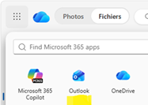
Cliquez sur l’icône Contacts pour afficher les contacts :
Ouvrez le ruban du menu et cliquez sur « Exporter des contacts » :
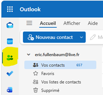
Une boîte de dialogue du type suivant apparait :
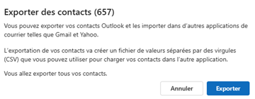
Cliquez sur [Exporter]
Un fichier contacts.csv est créé dans votre dossier Téléchargements. Renommez-le avec un nom de fichier qui contient la date du jour et votre prénom, par exemple :
<aaaa.mm.jj>-contacts-<Votre prénom>.csv
Ce fichier pourra être sauvegardé sur votre dispositif de sauvegarde.
Il faut maintenant convertir ce fichier csv en vcf. Connectez-vous à votre compte gmail page contacts : https://contacts.google.com/.
Cliquez sur Importer :
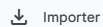
et sélectionnez le fichier csv que vous venez d’exporter depuis Outlook contacts.
Une fois les contacts importés, sélectionnez le premier contact, puis cliquez sur le chevron au-dessus des contacts à gauche pour sélectionner Tous. Une fois tous les contacts sélectionnés, cliquez sur les trois petits points verticaux à droite, puis choisissez le format « vCard pour Android ou iOS » :
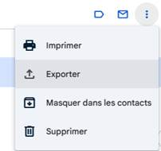
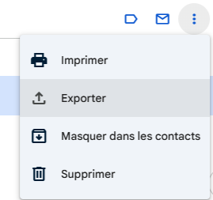
Vous pouvez éventuellement sauvegarder ce fichier d’export vcf contenant tous vos contacts.
Nous allons maintenant importer vos contacts dans Cloudeezy.
Connectez-vous sur votre compte Cloudeezy (https://my.cloudeezy.com/login) et utilisez le fichier vcf exporté depuis Google Contacts pour l’importer dans Cloudeezy Contacts :
Après l’import, si vous avez des dates d’anniversaire dans vos contacts, vous constaterez qu’elles apparaissent dans le calendrier Cloudeezy :
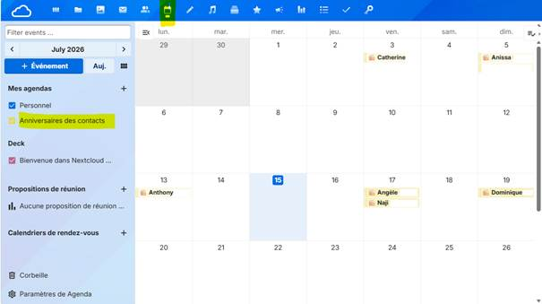
La visualisation web des contacts et du calendrier fonctionne désormais correctement.
Nous verrons au chapitre suivant comment faire pour visualiser ses contacts et son calendrier sur son PC ou son téléphone depuis un autre client de messagerie qu’Outlook.
Il nous faut maintenant exporter notre calendrier Outlook au format iCalendar ics pour pouvoir l’importer dans Cloudeezy.
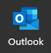
Démarrez le client lourd Outlook classique.Cliquez sur Calendrier dans la barre à gauche et veillez à ce que seul votre calendrier principal soit sélectionné :
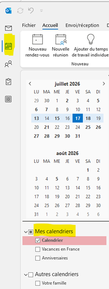
Cliquez sur le menu Fichier, puis sur Enregistrer le calendrier :
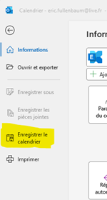
Avant de cliquer sur Enregistrer, vous devez cliquer sur le bouton Autres Options… :
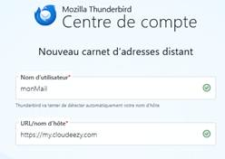
Vous devrez alors préciser la portion de calendrier à exporter et les détails à exporter.
Ci-dessous un exemple où l’on exporte tout sur une plage d’un an et demi (6 mois avant le mois courant et 1 an après le mois courant) :
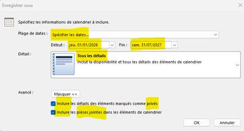
Il ne reste plus qu’à importer ce fichier ics dans Cloudeezy.
Pour cela, connectez-vous à votre compte Cloudeezy (https://my.cloudeezy.com/) et sélectionnez Agenda :
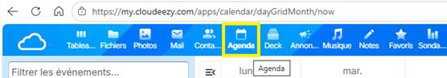
Cliquez en bas sur Paramètre de Agenda :
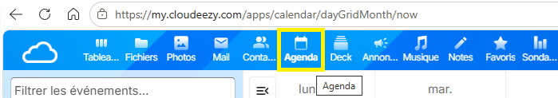
puis cliquez sur Importer un agenda :
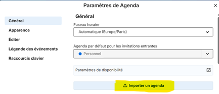
Vous n’avez plus qu’à indiquer le nom du fichier ics à importer.
Bravo ! Vous avez transféré vos contacts et votre agenda dans Cloudeezy.
Vous pourrez dans quelque temps supprimer tous vos contacts et calendrier de la plateforme Microsoft 365.
Il s’agit ici de pouvoir accéder avec le client Mozilla Thunderbird depuis son PC à ses contacts et à son calendrier tous deux archivés dans Cloudeezy.
En plus du client web, Microsoft propose deux clients de messagerie sur Windows (Outlook ancien et nouvel Outlook) :
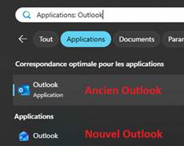
Pour les remplacer tous les deux, installez Mozilla Thunderbird sur votre PC et sur votre téléphone Android (https://www.thunderbird.net/fr/thunderbird/all/). Vous pouvez passer par le store Windows et le Google Play Android.
Nota bene : l’alternative Mailspring (Open source) pour le client mail semble intéressante pour un ordinateur mais il n’existe pas de version pour téléphone Android ou iPhone (https://www.getmailspring.com/download).
Configurez sur Thunderbird les boîtes mail que vous utilisiez sur Outlook. Vérifiez que cela fonctionne. Si vos boîtes aux lettres son IMAP, vous récupérerez également tous les dossiers créés dans ces boîtes (https://support.mozilla.org/fr/kb/options-configuration-pour-comptes#w_gestion-des-comptes).
Ainsi vous pourrez pendant un temps lire vos boîtes aux lettre aussi bien dans Outlook ou Gmail que dans Thunderbird.
Une fois que vous vous serez familiarisé avec Thunderbird, vous pourrez désinstaller les deux applications Outlook sur votre PC Windows et l’application Microsoft Outlook sur votre téléphone.
Si vous le voulez, vous pourrez faire un don de 15 € à Thunderbird https://www.thunderbird.net/fr/donate/.
Il vous reste maintenant à connecter les contacts et le calendrier Cloudeezy à Thunderbird sur votre PC. Puis il faudra faire de même sur votre téléphone. Le mode d’emploi est le suivant.
Sur votre PC sous Windows, lancez Thunderbird et sélectionnez la vue « Carnet d’adresses (Alt+2) » :
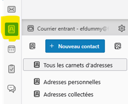
Puis cliquez sur « Ajouter un carnet d’adresses » :
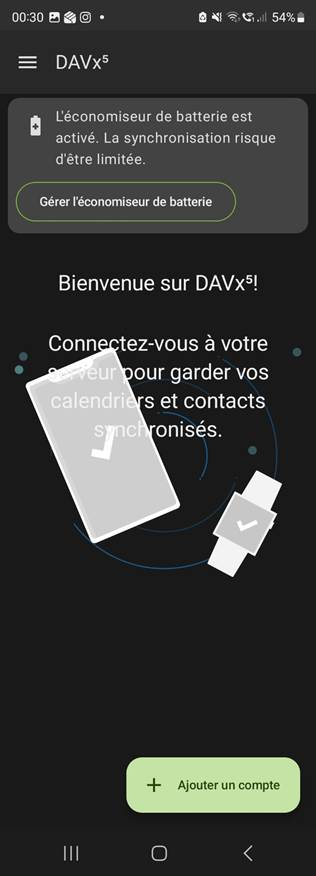
Puis sélectionnez « Ajouter un carnet d’adresse distant CardDav » :
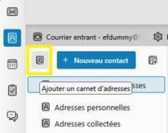
Saisissez votre mail, puis l’adresse du serveur de contacts Cloudeezy (https://my.cloudeezy.com) :
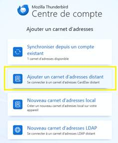
Cliquez sur [Continuer], puis tapez votre mot de passe :
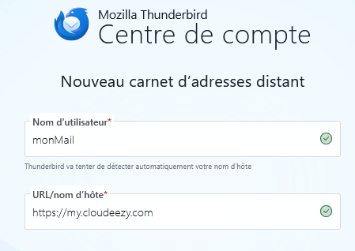
Sélectionnez ensuite la liste de contacts à synchroniser, puis cliquez sur [Continuer]:
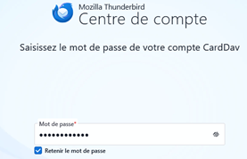
Vous pouvez désormais voir vos contacts Cloudeezy sur Thunderbird et en ajouter de nouveaux.
Pour synchroniser le calendrier sur votre PC, dans Thunderbird :
Sélectionnez la vue « Agenda (Alt+3) »
Cliquez en bas sur « Ajouter un agenda… »
Sélectionnez « Sur le réseau »
Saisissez votre mail comme nom d’utilisateur
Saisissez l’adresse du serveur https://my.cloudeezy.com puis cliquez sur « Rechercher des agendas »
Saisissez votre mot de passe
Cliquez sur « S’abonner »
Bravo ! Sur votre PC, vous n’êtes plus dépendant de Microsoft pour vos contacts et votre calendrier.
Il s’agit ici de pouvoir accéder depuis son téléphone à ses fichiers, ses contacts et ses calendriers archivés dans Cloudeezy/Nextcloud.
Sur votre téléphone Android, installez l’application Nextcloud pour mobile Android depuis le Play Store. Avec cette application, vous pouvez désormais visualiser vos fichiers sur votre téléphone.
Sur votre mobile Android, vous devez également installer et paramétrer les applications suivantes :
DAVx5 (synchronisation des contacts et calendriers)
Nextcloud calendar (visualisation des calendriers)
L’installation de DAVx5 créera un nouveau compte cloud (celui de Cloudeezy) qu’il faudra désigner comme compte à utiliser dans votre application contacts. Les écrans suivants vous proposent un jeu de paramètres qui fonctionne :

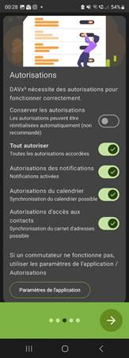
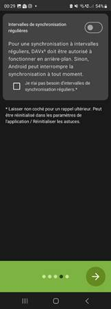
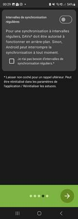
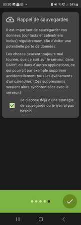
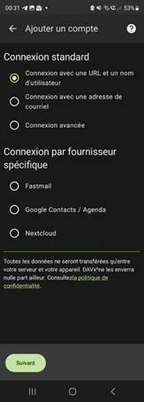
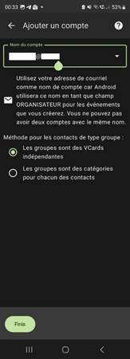
Dans DAVx, cliquez sur « Synchroniser maintenant » pour les agendas et pour les carnets d’adresse :
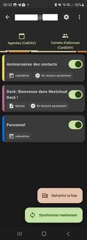
Vous disposez désormais d’un compte Cloudeezy pour vos contacts. Démarrez votre application Contacts et sélectionnez ce nouveau compte comme source de vos contacts. Ci-dessous quelques copies d’écran de l’application Contacts de Google et de celle de Samsung qui montrent que le compte Cloudeezy est bien source des contacts :
Avant et après dans l’application Contacts de Google et dans celle de Samsung :
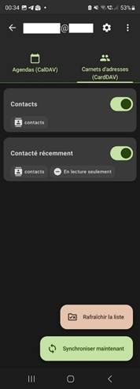
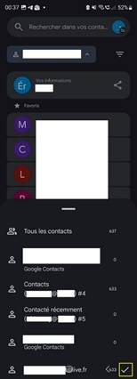
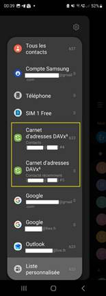
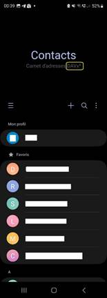
Google contacts AVANT APRÈS Samsung contacts AVANT APRÈS
Il ne vous reste plus qu’à synchroniser votre calendrier sur votre téléphone.
Installez depuis le Play Store l’application Nextcloud Calendar et connectez-la en utilisant le QR code fourni sur la page d’accueil de votre espace web Cloudeezy.
1) Connectez-vous à votre espace web Cloudeezy et affichez le QR code en cliquant sur le petit logo QR code en haut à droite : 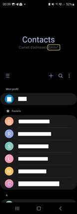 |
2) Le QR code s’affiche : 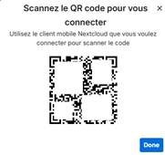 |
3) Scannez ce QR code avec l’application Nextcloud calendar : |
|---|
Bravo ! Vous disposez maintenant d’un espace de stockage, de contacts et de calendriers souverains et synchronisés entre votre PC et votre téléphone. Vous pouvez cesser d’utiliser Outlook.
Pour remplacer Word, Excel et Powerpoint, l’idéal serait de pouvoir installer en local la suite bureautique européenne Euro-Office :
https://fr.wikipedia.org/wiki/Euro-Office
Cependant, son installation en local est encore un peu difficile (*).
En attendant Euro-Office, on peut déjà utiliser Only Office. Cela tombe bien car la version online est fournie avec le compte Cloudeezy et est entièrement compatible avec les formats Microsoft docx, xlsx et pptx.
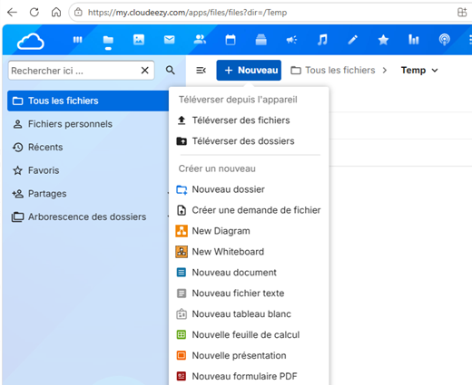
Pour disposer des éditeurs qui fonctionnent hors du navigateur en l’absence de réseau, installer en local la version ONLYOFFICE Desktop Editors https://www.onlyoffice.com/download-desktop#desktop.
Si l’on veut accéder aux fichiers stockés sur son espace Cloudeezy, il suffit de lancer
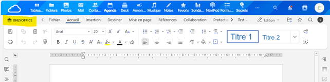
ONLYOFFICE et de cliquer sur « Clouds + » :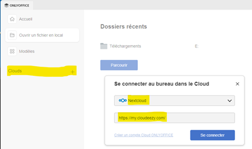
Bravo ! Vous pouvez désormais modifier des documents Office sans utiliser ni Word, ni Excel, ni PowerPoint.
(*) On ne passe pas tout de suite à Euro-Office car pour que la version actuelle fonctionne en local sur le poste, il faut aujourd’hui activer les WSL (Windows Subsystem for Linux) et installer manuellement un conteneur Docker sur son poste, ce qui n’est pas à la portée de tous.
Si vos adresses mail se terminent, par exemple, par outlook.fr ou live.fr ou gmail.com, c’est qu’elles sont hébergées par des services numériques américains et qu’il faut les évacuer ou du moins réduire leur usage au strict nécessaire (par exemple, une adresse gmail est nécessaire si l’on utilise un téléphone Android).
Pour cela, vous devez suivre les étapes ci-dessous.
Créez des boîtes mail chez des hébergeurs européens (*). Vous pouvez garder le même préfixe pour nommer ces boîtes aux lettres, seul le domaine changera. Prévoyez au moins deux boîtes aux lettres, une personnelle pour famille et amis et une « poubelle » (**) pour communiquer aux services marchands.
Si vous utilisez un client lourd pour lire vos messages (Thunderbird) en plus de l’interface web des boîtes aux lettres, paramétrez ces nouvelles boîtes dans Thunderbird.
Après avoir créé et testé ces boîtes aux lettres, prévenez vos contacts importants de votre changement d’adresse mail.
(*) Voici quelques exemples d’hébergeurs de boîtes mail européens :
Free, Orange, Bouygues Telecom, etc. Vous pouvez également consulter https://eutechstack.eu/fr/hebergement-email et https://european-alternatives.eu/category/email-providers
(**) Pour les mails « jetables », la solution Yopmail est particulièrement astucieuse : https://yopmail.com/fr/
La loi aux États-Unis :
Sites intéressants pour trouver des alternatives aux solutions américaines :
Pour les news sur le sujet https://www.reddit.com/r/BuyFromEU/
Pour les développeurs https://techalternatives.eu/
Notation confidentialité https://privacynex.org/
Boîtes mail : https://eutechstack.eu/fr/hebergement-email
Suite Cloudeezy, opéré par des Français avec une technologie Nextcloud allemande et Open Source :
Suite numérique Cloudeezy (France) https://cloudeezy.com/hebergement-nextcloud/gratuit.html
Toute la documentation Cloudeezy/Nextcloud https://docs.nextcloud.com/server/latest/user_manual/fr/index.html
Installation de Thunderbird https://www.thunderbird.net/fr/thunderbird/all/
Thunderbird installation avancée https://support.mozilla.org/fr/kb/installation-personnalisee-thunderbird-windows
Se connecter aux contacts et calendrier Cloudeezy https://docs.nextcloud.com/server/31/user_manual/en/groupware/sync_thunderbird.html
Utiliser l’application Contacts https://docs.nextcloud.com/server/latest/user_manual/fr/groupware/contacts.html
Utiliser l’application Agenda https://docs.nextcloud.com/server/latest/user_manual/fr/groupware/calendar.html
Autres suites et solutions numériques alternatives intéressantes :
Suite numérique des agents de l’état et des professionnels disposant d’un numéro de SIREN/SIRET (France) https://lasuite.numerique.gouv.fr/
Une autre suite numérique française Twake de Linagora (France) https://twake.app/
Proton (Suisse) n’offre pas la possibilité de partager ses contacts et son calendrier entre le PC et le Smartphone https://proton.me/. Ne supporte pas IMAP pour des raisons de sécurité.
Mail, calendrier et drive Tuta (Allemagne) https://tuta.com/fr. Ne supporte pas IMAP pour des raisons de sécurité.
Export des contacts Outlook, un mode d’emploi qui ne fonctionne pas si bien
Export et import de contacts Outlook https://univik.com/blog/export-outlook-365-contacts-to-vcf/ (fonctionne mal au-delà de 50 contacts)
Exemple d’alternatives :
Navigateur Thunderbird https://www.thunderbird.net/fr/thunderbird/all/
Moteur de recherche Startpage (Pays-Bas) https://www.startpage.com/fr/
Moteur de recherche DuckDuckGo intéressant mais pas européen (Californie) https://duckduckgo.com/
Moteur de recherche Ecosia (Allemagne) https://www.ecosia.org/
IA recherche et traduction IA Mistral Vibe (France) https://chat.mistral.ai/chat
IA recherche et traduction Startpage Vanish IA privée (Pays-Bas) https://vanish.startpage.com/fr
IA recherche et traduction Duck ai intéressant mais pas européen (Californie) https://duck.ai/
Traduction DeepL (Allemagne) https://www.deepl.com/fr/translator
Mail Mailspring, The beautiful email client https://www.getmailspring.com
Mail Proton Mail https://proton.me/mail
Mail jetable Yopmail https://yopmail.com/fr/
Proton VPN https://protonvpn.com/, VPN qui n’utilise pas de logs sur disque https://protonvpn.com/features/no-logs-policy
Mullvad VPN https://mullvad.net/fr
Messagerie Telegram (Dubai) https://telegram.org/
Pour une confidentialité maximum, il est possible d’installer Telegram
sans donner accès à sa liste de contacts ni à son numéro de téléphone.
Pour cela, utilisez un numéro de téléphone anonyme acheté sur la
plateforme Fragment (achat en tokens de la blockchain
TON soit quelques euros avec Tonkeeper par exemple https://telegram.org/blog/ultimate-privacy-topics-2-0/fr).
Utilisez également les conversations secrètes (Menu « Démarrer un
échange secret ») qui ne sont pas stockées sur les serveurs...
Messagerie Olvid (France), la plus sécurisée https://www.olvid.io/fr/
Cartographie Here We Go (Pays-Bas) https://wego.here.com/
Cartographie Mapy (République Tchèque) https://mapy.com/fr
Cartographie CoMaps (Open source) mais un peu pauvre https://www.comaps.app/fr/
Organic map https://korben.info/organic-maps-gps-offline-open-source.html
DNS https://korben.info/dns4eu-europe-alternative-google-cloudflare.html
Alternatives à Word, Excel et Powerpoint
Bureautique Onlyoffice (Royaume-Unis, Lettonie/Russie ?) https://www.onlyoffice.com/download-desktop#desktop
Bureautique Euro-Office (Europén, Open source en cours de stabilisation) https://euro-office.github.io/documentation/installation/docker/ et https://github.com/Euro-Office
Alternatives au streaming vidéo (Youtube, Netflix, Amazon Prime Vidéo, Disney+)
Dailymotion (France) https://www.dailymotion.com/fr
Arte series et fictions (France, Allemagne) https://www.arte.tv/fr/videos/series-et-fictions/
Peertube (Open source) https://joinpeertube.org/fr_FR
Alugha (Allemagne) https://alugha.com
Alternatives au streaming musical américain (Apple music, etc.)
Deezer (France) https://www.deezer.com/fr/
Spotify (Suède) https://open.spotify.com/intl-fr
Qobuz (France) https://www.qobuz.com/fr-fr/discover
Alternatives aux réseaux X, Instagram, TikTok, Facebook
Mastodon (Open source) https://joinmastodon.org/fr
Alternatives aux systèmes d’exploitation (Windows, MacOS, Android, iPhone)
Linux Mint https://www.linuxmint.com/ ou Linux Ubuntu https://ubuntu.com/download
Fairphone téléphone réparable, équitable et équipé d‘un système d’exploitation Open Source Murena conçu en Europe https://www.fairphone.com/fr et https://e.foundation/e-os/
Migration Windows vers Linux